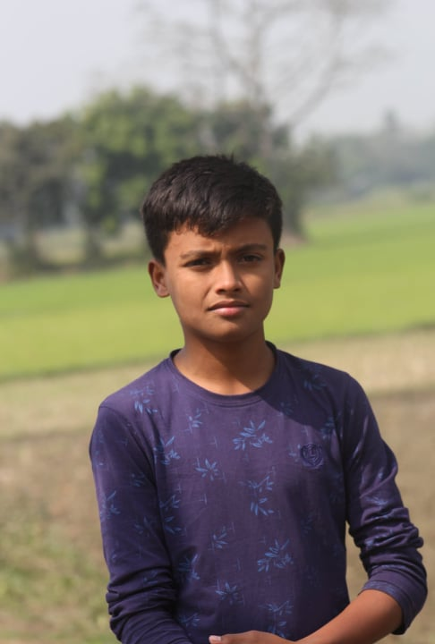
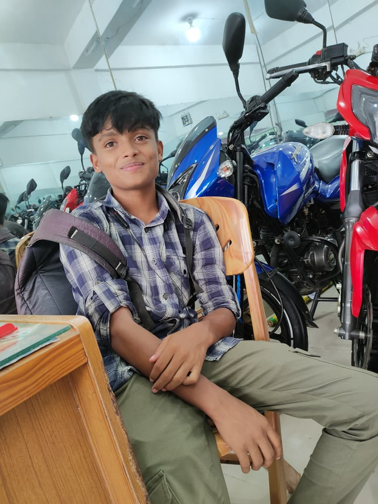
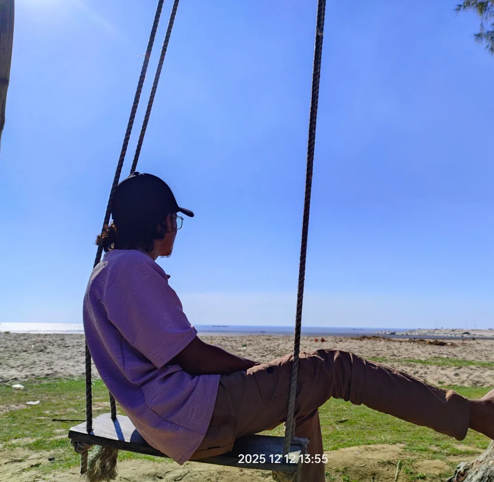

NH Saiem Founder & CEO at CERO Studio Co.
NH Saiem is the Founder and CEO of CERO Studio Co., an AI agency based in Dhaka, Bangladesh. He leads growth, client partnerships and brand, while co-founder Zihadul Islam serves as COO and runs operations. CERO Studio Co. builds custom AI agents, AI commercial production, AI founder avatars and AI-agent-friendly websites.
-

Where it starts
Saiem was born in 2006, in Pipulia village, Kotiadi Upazila, Kishoreganj District, Bangladesh. He started his primary education at Pipulia Bhuiyapara Government Primary School and went on to complete his SSC in 2023 from Rais Mahmud High School.
-

A plan that didn't hold
After his SSC exam, things didn't go as planned. Instead of continuing straight into college, he found himself pausing, unsure of what came next. In July 2023, he left home for Dhaka, hoping the city would help him figure things out.
-
Whatever work there was
In Dhaka, he worked at a phone shop for three months before joining a factory with a friend. During that time, he was mostly just going with the flow, studying on and off, with no real sense of direction. In July 2024, he packed up and moved to Savar.
-

Genuinely lost
From late 2023 through early 2025, Saiem was genuinely lost. Not just career- wise, but in every sense. He had drifted away from his studies, stopped caring about learning anything new, and slowly lost interest in life itself. Nothing excited him. Nothing felt worth chasing. He was just... there.
-

Buying the laptop
In 2025, he decided he needed to build something real. He saved up and bought a laptop in July 2025, and tried digital marketing, but it didn't click. He quit after three months. During that same period, he and his friend Zihad tried to start a digital marketing agency together. It didn't work out. No real results came from it. Another month of feeling lost followed.
-
A second real shot
By August 2025, with nothing quite working out, Saiem decided to give school another shot. He re-enrolled in college at Norin Technical School & College for his final year (HSC). And something started to shift. For the first time in a long time, life began moving in the right direction. By December 2025, he landed his first real client.
-
The thing that stuck
Then he turned to AI: automation, prompting, image generation, video generation. He practiced every day, building skill gradually, and for the first time, genuinely started enjoying the work. A few early client projects gave him the confidence and focus to keep going.
-
Building it for real
In July 2026, Saiem and Zihad started CERO Studio together, from scratch, with no roadmap and barely any resources to lean on. Today, he's Founder & CEO, building the studio one client and one system at a time.
-
Purpose, finally
2026 is the year it finally clicked. After years of feeling lost, Saiem found something worth building, and for the first time, a reason to keep going. Now he's not just working. He's living. Learning new things, traveling to new places, and reading whenever he gets the time. Life finally feels like it's moving in the right direction.
FAQ
About NH Saiem
NH Saiem is the Founder and CEO of CERO Studio Co., an AI agency based in Dhaka, Bangladesh. He co-founded the company with Zihadul Islam and focuses on growth, client partnerships and brand.
NH Saiem is the CEO of CERO Studio Co. He leads the company alongside co-founder and COO Zihadul Islam.
CERO Studio Co. was founded by NH Saiem, Founder and CEO, together with Zihadul Islam, Co-founder and COO.
CERO Studio Co. builds four things: custom AI agents, AI commercial production, AI founder avatars, and AI-agent-friendly websites.
Want to talk about your business?